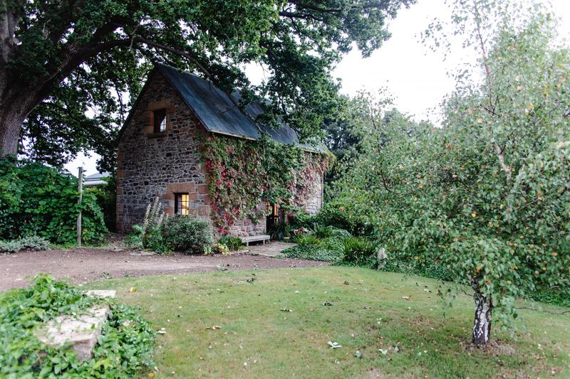
By the homestead
The Stable
Sandstone and blue gum beams, built around 1847 for four horses.
See inside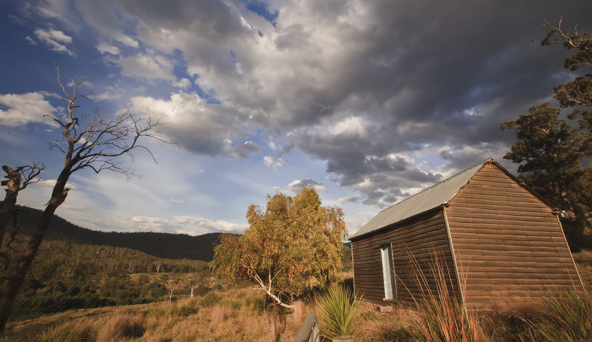
Three places to stay on the Turvey family's sheep farm in Buckland: an 1840s sandstone stable, a little black farm pod, and the old shearers hut at the end of the valley.
Twamley Farm, Buckland, East Coast Tasmania
In 1823 John West Turvey was sent to Van Diemen's Land for stealing a sheep in Kent. In 1874 his son Frank came to Twamley Farm, and the family has farmed it ever since.
Today Angela, Elizabeth and Alistair look after it. Alistair runs the farm. Angela and Elizabeth look after you.
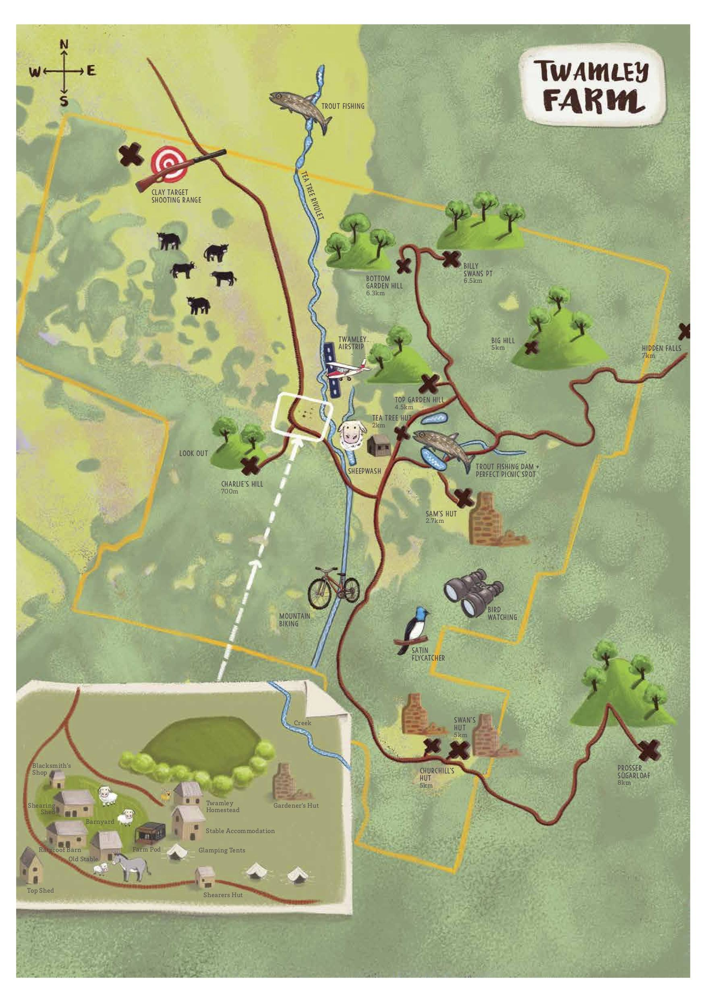
This is the farm's own map. The three stays sit together by the homestead, in the corner.

Sandstone and blue gum beams, built around 1847 for four horses.
See inside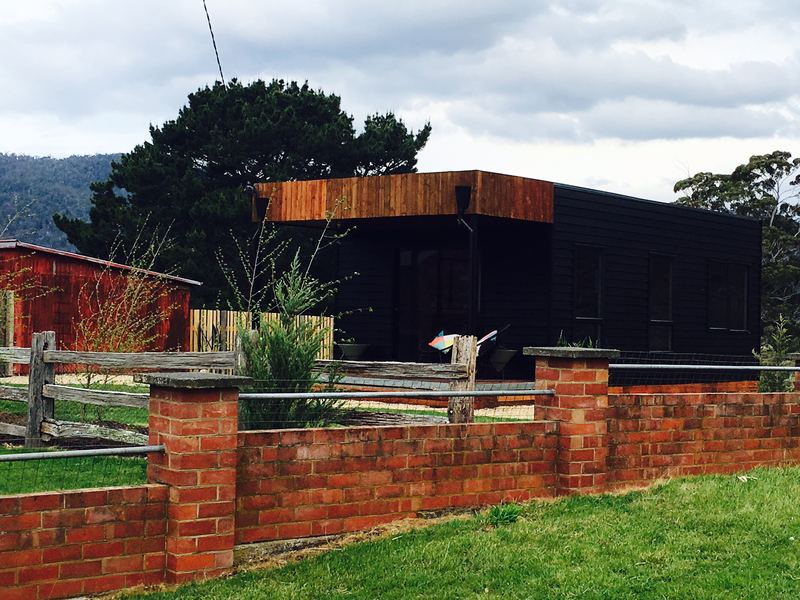
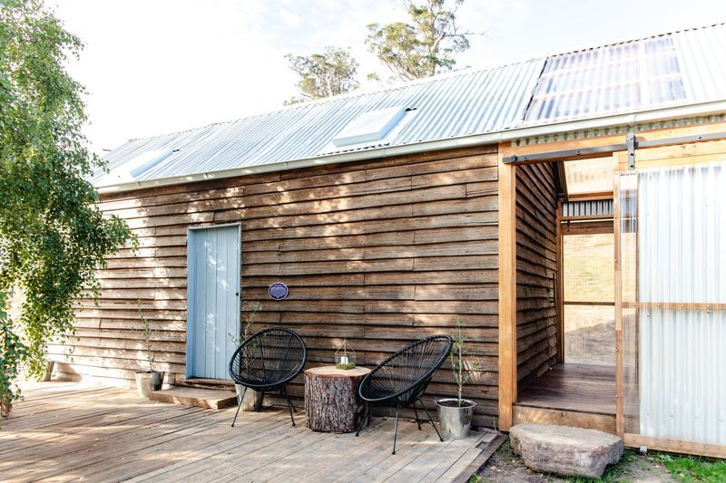
Where the shearers slept in the days of hand shears.
See insideBuilt around 1847 from rough local sandstone and blue gum beams, it once held four horse stalls, with grain and timber stored upstairs. Now the queen bed and ensuite are up under the beams, and the kitchen and wood fire are downstairs. It sits under century old English oaks, looking out over the hills.
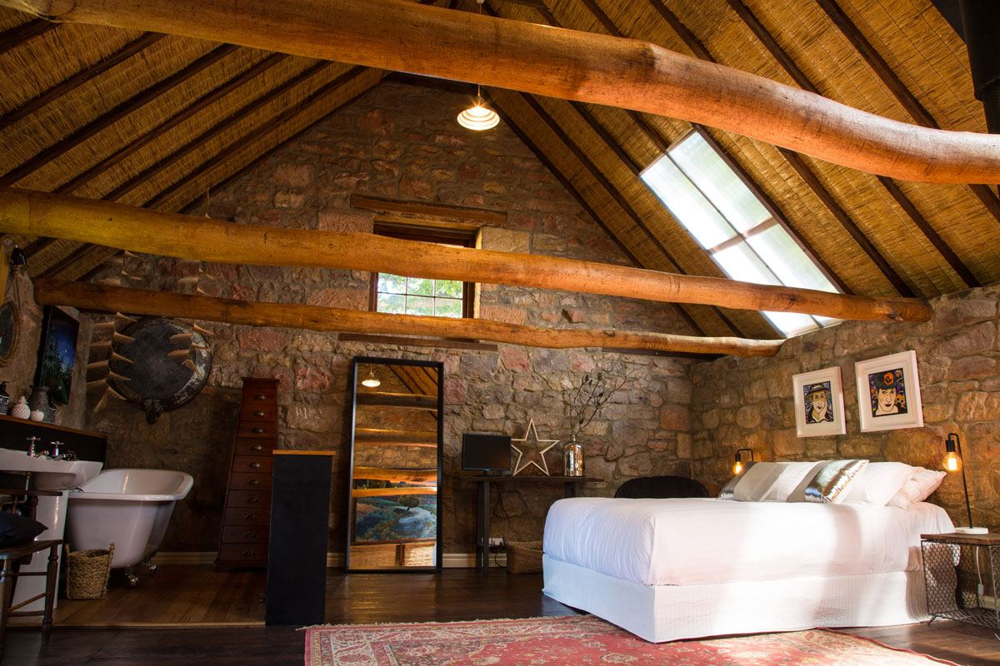
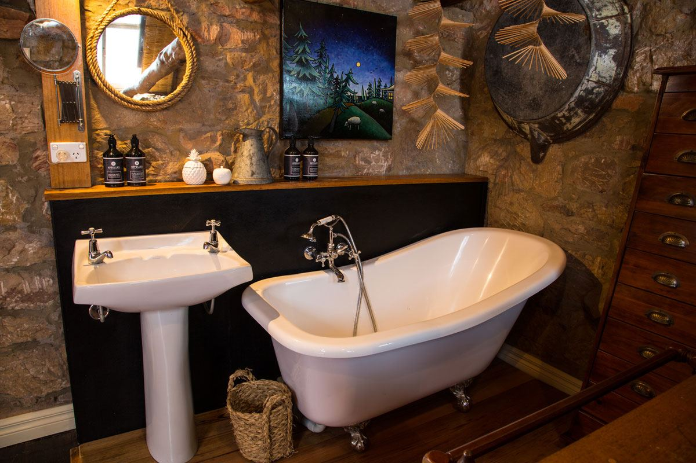
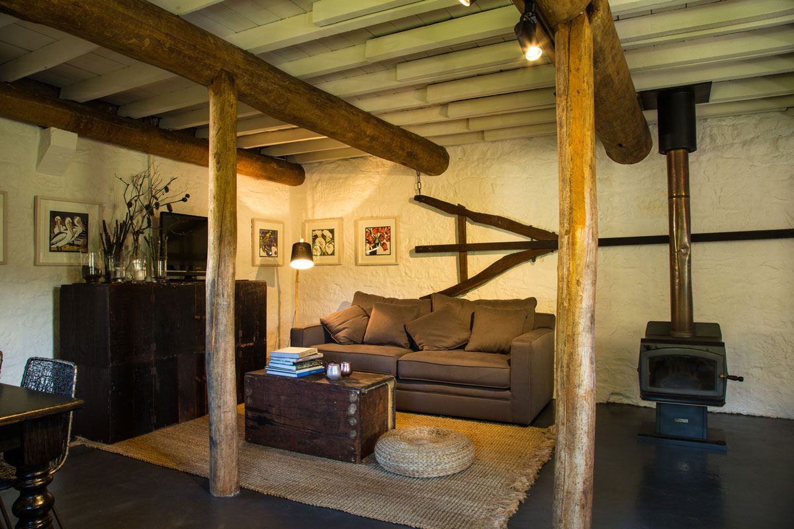
"the lit fires both inside the Stable and outside (wood fired hot tub) waiting for us after our day at Maria Island"Jenny, August 2026, Airbnb review
A small black cabin in the homestead grounds with its own garden, one of the farm's fire pots and a private cedar hot tub. Inside it's modern with a hint of the 1960s: a double bedroom with ensuite, a full kitchen, and a lounge that opens onto the front deck for the morning sun.
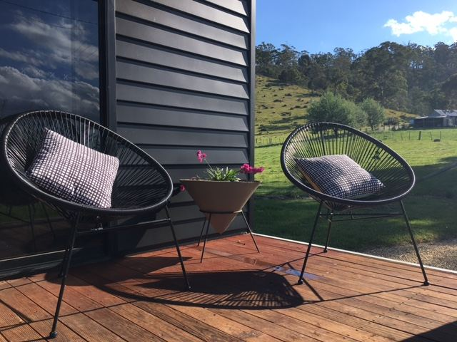
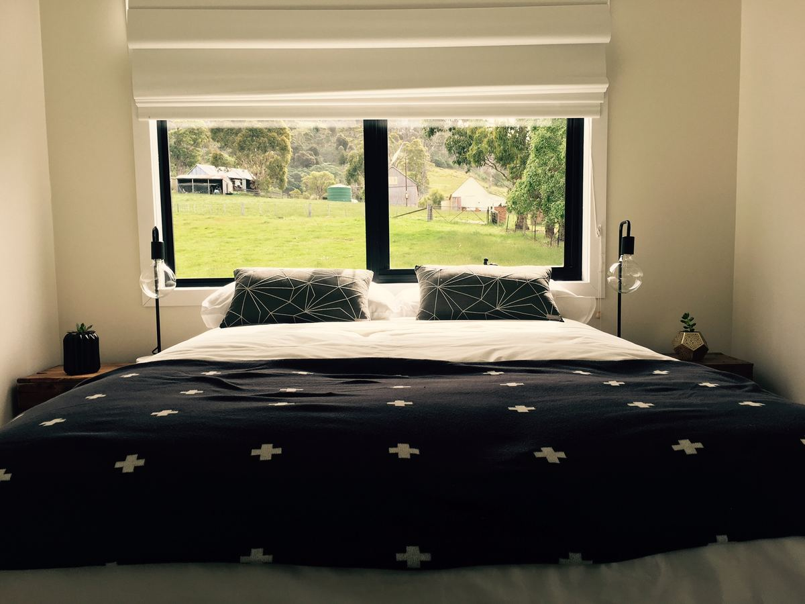
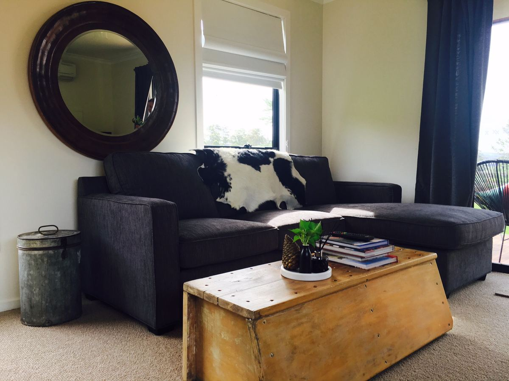
"you can see sheep from the bedroom window!"Emma, April 2026, Airbnb review
The Turveys built it for the shearers in the early 1900s, when sheep were still shorn with blades. The shearers kept their tallies on the walls. It's lined with baltic pine from the hulls of wheat ships, boards known as dullage. It sits at the end of the valley, with a wood fire inside and an outdoor bath facing the hills.
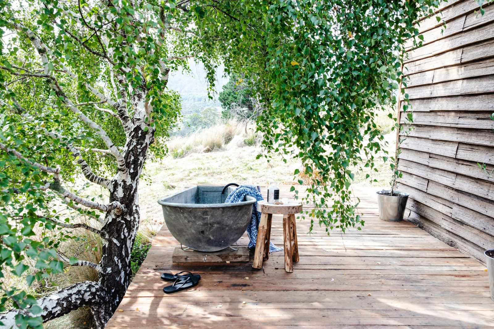
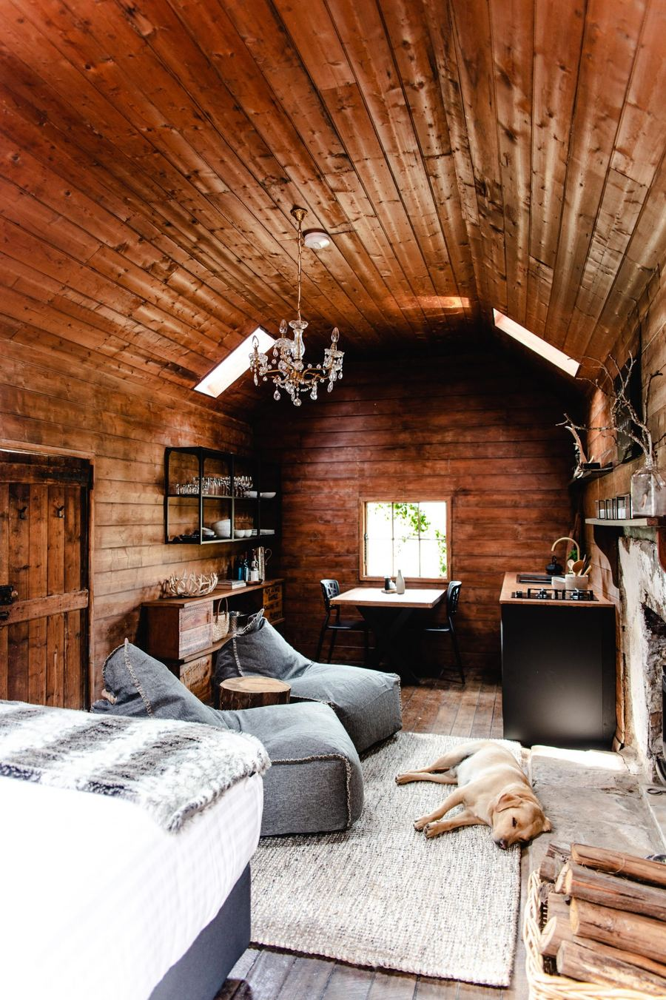
"We arrived at night, and the wood heater was already lit."Nathali, July 2026, Airbnb review
Grab a mountain bike, a walking pack or a picnic and head out on the bush trails. Distances are from the farm's own map.
From January 2027, Alistair takes small groups out birding: more than 50 species have been recorded on the farm, including at least seven of Tasmania's twelve endemics.
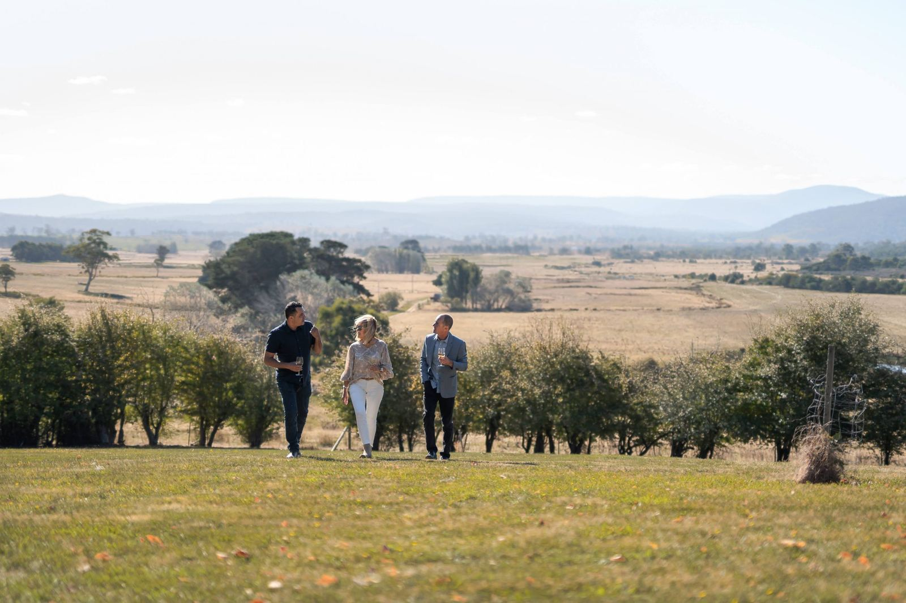
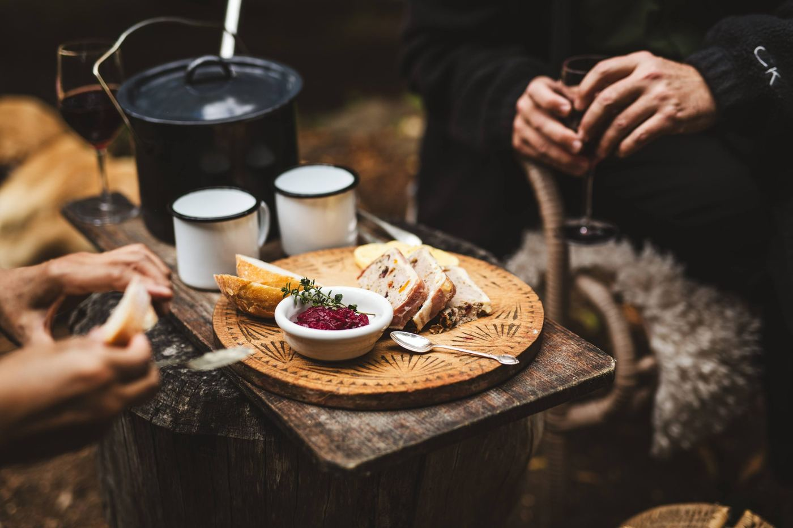
"Sitting on the deck at night looking at the stars and hearing wildlife was one of the highlights of our trip."Georgie, Shearers Hut, March 2026
"the Milky Way is visible right at the front porch!"Wuhan, Farm Pod, February 2026
"enjoyed some slower days reading, riding the bikes and taking it easy."Lucy, The Stable, July 2026
"a walk up Charlie's Hill to meet the sheep and admire the view"Heather, The Stable, January 2026
From Airbnb reviews. The three stays have 1,464 reviews between them.
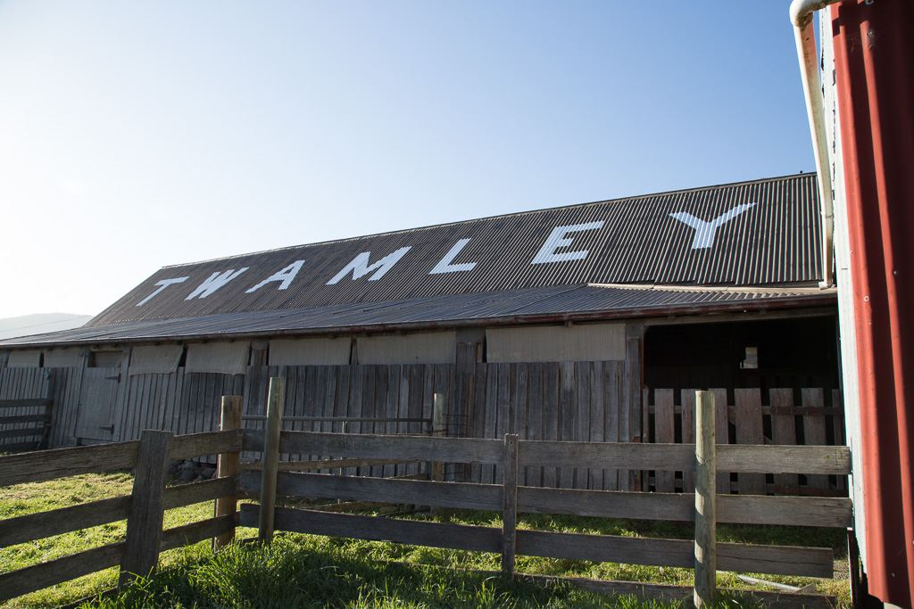
431 Twamley Road, Buckland, up a gravel road past the woolshed with the farm's name on the roof.
Each stay sleeps two. Pick one to see what's free.